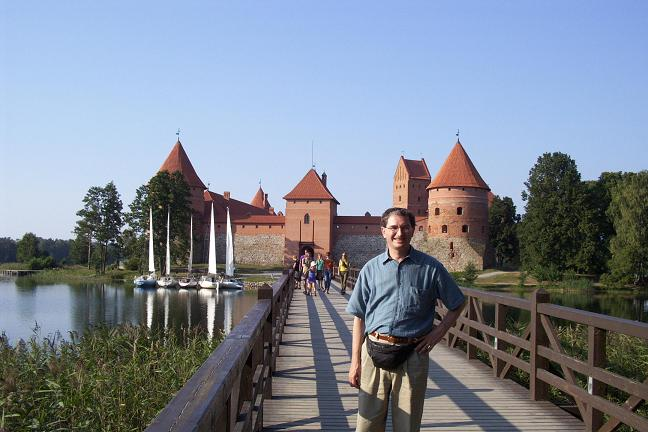

Trakai
Gediminas, the leader of a united Lithuania during the early 1300s, reportedly made Trakai, some 30km west of Vilnius, his capital in 1321. Today it is a small, quiet town between two vast lakes featuring a beautifully restored castle – the only insular castle in Eastern Europe. The castle was built as a defensive fortress and, after the Germans were decisively defeated at the Battle of Grünwald in the early 1400s, it was turned into a ducal residence, later into a prison, and afterwards it was abandoned for centuries. It was fixed up and turned into a historical museum by 1962, and many festivals and concerts take place here and in the surrounding parkland. Incidentally, Jews used to live in Trakai, and according to the aforementioned report by SS Standartenfuhrer Karl Jager, nearly 1,500 of them were shot on September 30th, 1941. For more information on Trakai, see http://www.tourism.lt/region/vilnius/trakai.htm and http://www.trakai.lt/main_en.htm.


Back to the Lithuania Section Back to the Simnas Section Back to the trip homepage